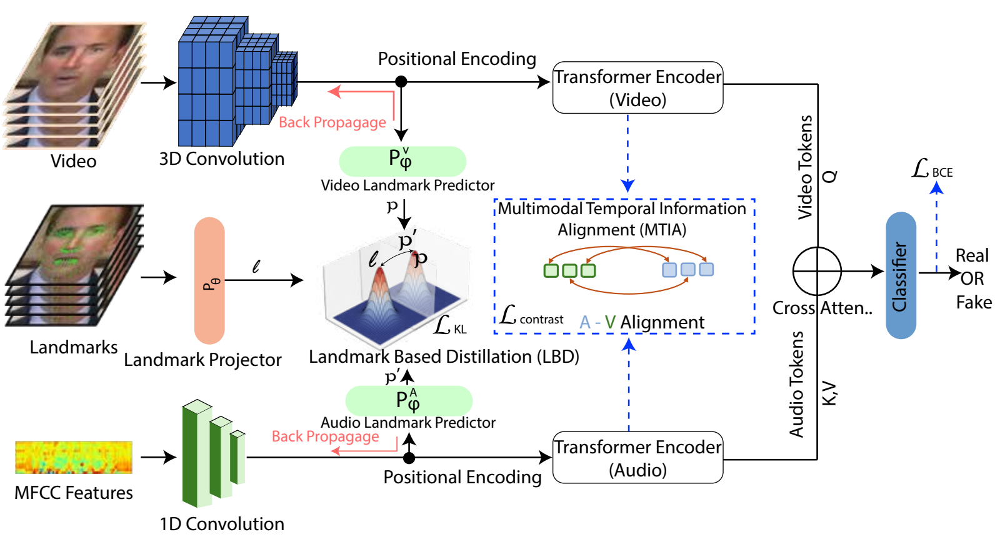
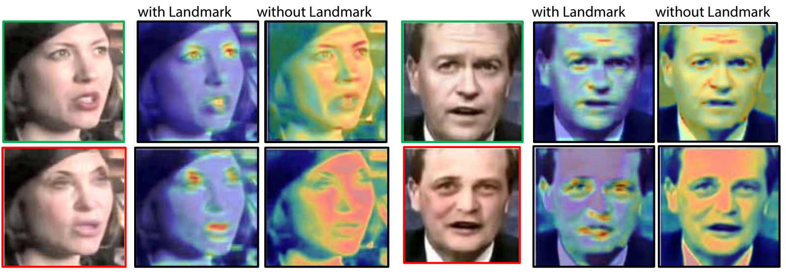

TL;DR
Audio-visual deepfake detectors that do well on academic benchmarks often attend to background and other spurious cues, and degrade on real-world deepfakes. Beyond Masking uses facial landmarks as a distillation target so that both the video and the audio encoder focus on facial geometry, and aligns the two modalities over time with contrastive learning.
- Landmark-based Distillation (LBD): video and audio landmark predictors are aligned with a projected MediaPipe landmark representation through KL-divergence.
- Multimodal Temporal Information Alignment (MTIA): transformer encoders with positional encoding, cross-attention fusion, and an audio-visual contrastive loss.
- Real-World (RW) web dataset: over 500 viral audio-visual deepfakes collected from social media platforms.
- Cross-dataset (trained on FakeAVCeleb and KoDF): 78.12 ACC / 78.82 AUC on DFDC and 75.12 ACC / 75.65 AUC on the RW dataset with 32.4 M parameters, the highest values among the methods compared in Table 2.
Abstract
Audio-visual deepfake detection methods demonstrate strong performance on academic datasets but fail significantly when applied to real-world. To address the shortcomings of previous approaches, we utilize landmarks dynamic information. First, we propose Landmark-based Distillation (LBD), motivated by I-JEPA’s representation learning approach. LBD utilizes KL-divergence to align facial landmark predictions from visual and audio encoders, enforcing focus on geometric facial features rather than spurious background information. Second, we introduce Multimodal Temporal Information Alignment (MTIA), which employs contrastive learning to enhance temporal consistency between audio and visual representations. We conduct experiments on academic datasets and web-based deepfakes collected from diverse social media platforms, serving as real-world examples. Our proposed landmark-guided distillation framework achieves computational efficiency while improving multimodal video deepfake detection performance across a diverse range of deepfakes compared to existing methods. The code is available at https://github.com/Ckck12/Beyond-Masking.
Real-World Audio-Visual Deepfakes
The Real-World (RW) web dataset contains over 500 viral audio-visual deepfake samples sourced from major social media platforms, including Meta, YouTube, and Reddit. Samples were chosen by video quality and audio realism, and include high-value professionals such as presidents and military personnel. For real audio-visual samples, 500 VoxCeleb videos are used.
Method

- Inputs: cropped face video (3D CNN fvid), MFCC audio features (1D convolution faud), and facial landmarks from MediaPipe, mapped by the landmark projector Pθ to a landmark representation l.
- LBD: landmark predictors give p = Pvφ(V′) and p′ = Paφ(A′), trained with LKL = KL(σ(p/T) ‖ σ(l/T)) + λβ KL(σ(p′/T) ‖ σ(l/T)). This pushes both encoders toward facial regions such as the eyes, lips, and face attributes rather than the background, neck, or hair.
- MTIA: V̂ = T(V′ + PE) and  = T′(A′ + PE). V̂ is the query and  the key and value of a multi-head cross-attention that feeds the real/fake classifier (LBCE). A contrastive loss Lcontrast on V̂ and  matches audio-video pairs and pushes apart mismatched ones.
- Objective: L = α(LKL + Lcontrast) + (1 − α) LBCE with α = 0.8, λα = 0.5, λγ = 0.5, λβ = 0.5.
- Settings: 3-second clips with 60 video frames, 478 landmarks per frame (X and Y), and MFCC features with 40 channels, a hop length of 512, and an FFT length of 2,048. Real samples are paired with fake samples from the same manipulated videos.
Quantitative Results
TABLE 1 · Intra-dataset evaluation results showing ACC, AUC, and model parameters on academic deepfake detection benchmarks.
| Methods | Params | DF-TIMIT (LQ) | DF-TIMIT (HQ) | DFDC | FakeAVCeleb | KoDF | |||||
|---|---|---|---|---|---|---|---|---|---|---|---|
| ACC | AUC | ACC | AUC | ACC | AUC | ACC | AUC | ACC | AUC | ||
| Visual unimodal | |||||||||||
| SPSL (Xception) | 45.7 M | 91.17 | 90.03 | 92.29 | 91.78 | 92.04 | 94.74 | 77.94 | 79.83 | 92.36 | 93.19 |
| PRRNet | 62.1 M | 93.86 | 95.30 | 98.72 | 98.97 | 95.24 | 96.37 | 78.17 | 79.54 | 94.52 | 94.83 |
| LipForensics | 36.0 M | 92.77 | 93.06 | 97.74 | 96.51 | 82.47 | 65.06 | 76.22 | 78.43 | 93.16 | 93.72 |
| STIL | 32.5 M | 95.76 | 94.18 | 98.24 | 99.03 | 92.17 | 95.07 | 79.80 | 78.29 | 94.14 | 93.92 |
| FTCN | 26.6 M | 93.64 | 94.41 | 96.62 | 95.39 | 94.92 | 97.88 | 78.98 | 79.21 | 93.22 | 92.96 |
| Multimodal | |||||||||||
| DST-Net | – | – | – | – | – | 82.80 | 86.20 | 78.40 | 80.40 | – | – |
| VFD | – | – | – | – | – | 80.90 | 85.10 | 81.50 | 86.10 | – | – |
| Emotions | 42.7 M | 92.76 | 92.95 | 94.69 | 95.42 | 82.36 | 85.00 | 83.42 | 84.81 | 93.26 | 94.41 |
| MDS | 47.4 M | 93.14 | 93.14 | 94.77 | 95.02 | 82.36 | 84.47 | 81.53 | 83.24 | 93.26 | 94.41 |
| Joint Audio-Visual | 46.1 M | 75.22 | 75.69 | 81.65 | 83.47 | 90.44 | 89.94 | 81.20 | 82.45 | 92.96 | 93.59 |
| Ours | 32.4 M | 96.82 | 97.35 | 98.98 | 97.72 | 89.75 | 90.07 | 92.38 | 93.25 | 93.48 | 94.75 |
Intra-dataset: 80% / 20% train / test split on each of the five benchmarks. FakeAVCeleb (19,500 fake and 500 real videos) is balanced with 10,000 VoxCeleb videos.
TABLE 2 · Cross-dataset evaluation results on DFDC and the proposed Real-World (RW) dataset.
| Methods | Params | DFDC | RW Dataset | ||
|---|---|---|---|---|---|
| ACC | AUC | ACC | AUC | ||
| Visual unimodal | |||||
| SPSL (Xception) | 45.7 M | 72.62 | 73.58 | 61.28 | 61.93 |
| PRRNet | 62.1 M | 74.65 | 75.18 | 65.85 | 65.43 |
| LipForensics | 36.0 M | 71.26 | 74.30 | 63.37 | 63.82 |
| STIL | 32.5 M | 70.29 | 71.34 | 65.48 | 65.18 |
| FTCN | 26.6 M | 73.18 | 74.03 | 64.19 | 64.80 |
| Multimodal | |||||
| Emotions | 42.7 M | 69.14 | 71.44 | 67.28 | 67.72 |
| MDS | 47.4 M | 70.29 | 70.30 | 66.84 | 67.32 |
| Joint Audio-Visual | 46.1 M | 71.22 | 72.69 | 68.15 | 67.87 |
| Ours | 32.4 M | 78.12 | 78.82 | 75.12 | 75.65 |
Cross-dataset: trained on FakeAVCeleb and KoDF, tested on DFDC and the RW dataset. ACC and AUC in %. Values are as reported in the paper (Tables 1–2). Our row is highlighted. The paper's bold/underline markings are not reproduced here.
Ablation Study
TABLE 3 · Ablation study on effects of different combinations of Pvφ, Paφ, Pθ, and MTIA.
| Pvφ | Paφ | Pθ | MTIA | FakeAVCeleb | |
|---|---|---|---|---|---|
| ACC | AUC | ||||
| ✗ | ✗ | ✗ | ✗ | 72.12 | 71.81 |
| ✓ | ✗ | ✓ | ✗ | 82.08 | 81.57 |
| ✗ | ✓ | ✓ | ✗ | 75.89 | 75.14 |
| ✓ | ✓ | ✗ | ✗ | 84.25 | 85.60 |
| ✓ | ✓ | ✓ | ✗ | 89.43 | 90.15 |
| ✓ | ✓ | ✓ | ✓ | 92.38 | 93.25 |
Row 1 encodes each modality separately and concatenates the features through a fully connected layer. The visual predictor with projection (row 2) outperforms the audio counterpart (row 3). Adding the landmark projection to both predictors (row 5) and then MTIA (row 6) gives the best FakeAVCeleb results.
Qualitative: Grad-CAM

Code
- Environment: Python 3.9, PyTorch 2.6 (cu124), CUDA 12.4.
- Data: preprocess each dataset (e.g., FakeAVCeleb, KoDF) into a cropped face video, an audio waveform (
.wav), and facial landmarks (.npy, MediaPipe) per sample. Loaders are inloaders/. - Training: run the provided script, e.g.
bash run_fakeavceleb.sh. Hyperparameters (BATCH_SIZE,LEARNING_RATE,FEATURE_DIM, …) are set at the top of the script.
git clone https://github.com/Ckck12/Beyond-Masking.git
cd Beyond-Masking
bash run_fakeavceleb.shSee the README for the expected directory layout of the preprocessed data.
Citation
If you find this work useful, please cite:
@inproceedings{park2025beyondmasking,
title = {Beyond Masking: Landmark-based Representation Learning and
Knowledge-Distillation for Audio-Visual Deepfake Detection},
author = {Park, Chan and Muneer, Muhammad Shahid and Woo, Simon S.},
booktitle = {Proceedings of the 34th ACM International Conference on
Information and Knowledge Management (CIKM '25)},
year = {2025},
publisher = {Association for Computing Machinery},
address = {New York, NY, USA},
location = {Seoul, Republic of Korea},
isbn = {979-8-4007-2040-6},
doi = {10.1145/3746252.3760853}
}